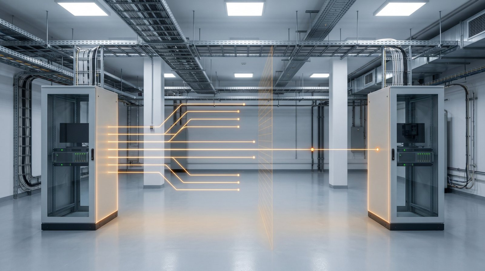

Errores de comunicación OPC con DCOM: por qué son tan difíciles de diagnosticarOPC communication errors with DCOM: why they are so hard to diagnose

Conectar una aplicación al sistema de control de la planta mediante OPC debería tomar minutos. Cuando la conexión usa OPC Classic, con frecuencia toma días, y casi nunca por culpa de la aplicación ni del sistema de control: el problema está en la configuración de Windows que hay entre ambos.
Por qué OPC Classic depende de DCOM
Las especificaciones de OPC Classic (DA para datos en tiempo real, AE para alarmas y eventos, HDA para datos históricos) se construyeron sobre COM, la tecnología de componentes de Windows. Cuando el cliente y el servidor están en equipos distintos, esa comunicación viaja por DCOM, la versión distribuida de COM.
La consecuencia es que una conexión OPC Classic no depende solo del software OPC. Depende de que dos equipos con Windows se autoricen mutuamente, y esa autorización se define fuera de las aplicaciones.
Por qué es tan difícil de diagnosticar
- La configuración está repartida. Intervienen las cuentas de usuario, los permisos de inicio, activación y acceso de DCOM, el nivel de autenticación, las políticas de seguridad locales, el firewall, la resolución de nombres, los servicios de Windows y la hora de los equipos. Y todo eso existe dos veces, una en cada equipo.
- Los mensajes de error dicen poco. Un «Acceso denegado» (0x80070005) o un «El servidor RPC no está disponible» (0x800706BA) tienen varias causas posibles cada uno. El código indica el síntoma, no el ajuste que falta.
- La comunicación va en los dos sentidos. Para entregar datos por suscripción, el servidor llama de vuelta al cliente. Por eso es común que la conexión funcione y se pueda navegar y leer, pero que los datos nunca se actualicen: el permiso que falta está en el equipo cliente, no en el servidor.
- Los puertos no son fijos. DCOM inicia la conexión por el puerto 135 y luego usa puertos asignados dinámicamente, lo que complica las reglas de firewall entre redes.
- Las actualizaciones de Windows cambian las reglas. Microsoft endureció la seguridad de DCOM por la vulnerabilidad CVE-2021-26414, y desde marzo de 2023 ese cambio ya no se puede desactivar. Integraciones que llevaban años funcionando dejaron de conectarse tras actualizar el sistema operativo (Microsoft, KB5004442).
- Depende de pocas personas. La configuración se hace a mano, equipo por equipo, y rara vez queda documentada. Cuando hay que repetirla en un equipo nuevo, se empieza de cero.
Qué revisar, en orden
- Que ambos equipos se vean en la red y resuelvan sus nombres.
- Que la hora de ambos equipos esté sincronizada.
- Que las cuentas de usuario existan y coincidan en ambos lados.
- Que los permisos de DCOM, generales y del servidor OPC, incluyan a esas cuentas.
- Que el nivel de autenticación cumpla lo que hoy exige Windows.
- Que el firewall permita la comunicación en ambos sentidos.
- Que los servicios necesarios estén en ejecución.
Cada punto es simple por separado. Lo difícil es que basta que uno falle, en cualquiera de los dos equipos, para que la conexión no funcione, y el error no dice cuál.
Cómo OPC Enlace facilita las integraciones
Kapptek OPC Enlace es una aplicación gratuita que hace esa revisión de forma automática y la convierte en un procedimiento repetible.
- Diagnostica y corrige. Revisa todo lo que necesita la comunicación OPC Classic (DCOM) y OPC UA: seguridad, cuentas y permisos, firewall, red, servicios, hora, puertos y certificados. Cada hallazgo explica cómo repararlo, con corrección automática reversible cuando es posible.
- Replica la configuración. Exporta la configuración de un equipo que ya funciona y la importa en otro del mismo sitio, comparando ítem por ítem antes de aplicar.
- Prueba la comunicación. Se conecta como cliente a servidores OPC DA, AE, HDA y UA para navegar, leer, escribir y suscribirse, y traduce cada error a su causa y su corrección.
- Audita clientes OPC. Actúa como servidor de prueba para comprobar cómo se comportan los clientes de terceros antes de conectarlos al sistema de control, y entrega un informe de auditoría.
El resultado es que una integración deja de depender de la memoria de un especialista: lo que se resolvió una vez queda disponible para el equipo siguiente.
Connecting an application to the plant control system through OPC should take minutes. When the connection uses OPC Classic, it often takes days, and almost never because of the application or the control system: the problem lies in the Windows configuration that sits between them.
Why OPC Classic depends on DCOM
The OPC Classic specifications (DA for real-time data, AE for alarms and events, HDA for historical data) were built on COM, the Windows component technology. When the client and the server are on different computers, that communication travels over DCOM, the distributed version of COM.
As a consequence, an OPC Classic connection does not depend only on the OPC software. It depends on two Windows computers authorizing each other, and that authorization is defined outside the applications.
Why it is so hard to diagnose
- The configuration is scattered. It involves user accounts, DCOM launch, activation and access permissions, the authentication level, local security policies, the firewall, name resolution, Windows services and the clock of each computer. And all of that exists twice, once on each machine.
- Error messages say little. An "Access denied" (0x80070005) or "The RPC server is unavailable" (0x800706BA) each have several possible causes. The code points to the symptom, not to the missing setting.
- Communication runs both ways. To deliver data by subscription, the server calls back to the client. That is why it is common for the connection to work, and for browsing and reading to succeed, while the data never updates: the missing permission is on the client computer, not on the server.
- Ports are not fixed. DCOM starts the connection on port 135 and then uses dynamically assigned ports, which complicates firewall rules between networks.
- Windows updates change the rules. Microsoft hardened DCOM security because of vulnerability CVE-2021-26414, and since March 2023 that change can no longer be disabled. Integrations that had worked for years stopped connecting after the operating system was updated (Microsoft, KB5004442).
- It depends on a few people. The configuration is done by hand, machine by machine, and is rarely documented. When it has to be repeated on a new computer, the work starts from scratch.
What to check, in order
- That both computers can see each other on the network and resolve each other's names.
- That the clocks of both computers are synchronized.
- That the user accounts exist and match on both sides.
- That DCOM permissions, both general and for the OPC server, include those accounts.
- That the authentication level meets what Windows requires today.
- That the firewall allows communication in both directions.
- That the required services are running.
Each item is simple on its own. The difficulty is that a single failure, on either computer, is enough to break the connection, and the error does not say which one.
How OPC Enlace makes integrations easier
Kapptek OPC Enlace is a free application that runs this review automatically and turns it into a repeatable procedure.
- Diagnoses and fixes. It checks everything OPC Classic (DCOM) and OPC UA communication needs: security, accounts and permissions, firewall, network, services, time, ports and certificates. Each finding explains how to repair it, with reversible automatic correction when possible.
- Replicates the configuration. It exports the configuration of a computer that already works and imports it into another one at the same site, comparing item by item before applying.
- Tests the communication. It connects as a client to OPC DA, AE, HDA and UA servers to browse, read, write and subscribe, and translates each error into its cause and its fix.
- Audits OPC clients. It acts as a test server to check how third-party clients behave before they are connected to the control system, and delivers an audit report.
The result is that an integration no longer depends on one specialist's memory: what was solved once remains available for the next computer.